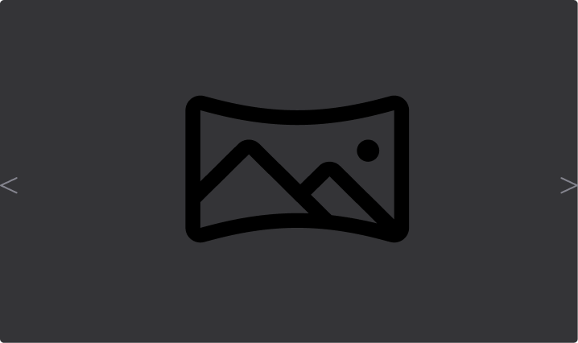

Bem-vindo ao Projeto Cubo Multisensorial
Nosso projeto, desenvolvido como Trabalho de Conclusão de Curso, é um brinquedo comunicador multisensorial em formato de cubo, criado para apoiar o desenvolvimento pessoal e ajudar pessoas com transtornos mentais. Utilizando a tecnologia Arduino, nosso cubo integra luzes, som e interações táteis para proporcionar uma experiência terapêutica e educativa.